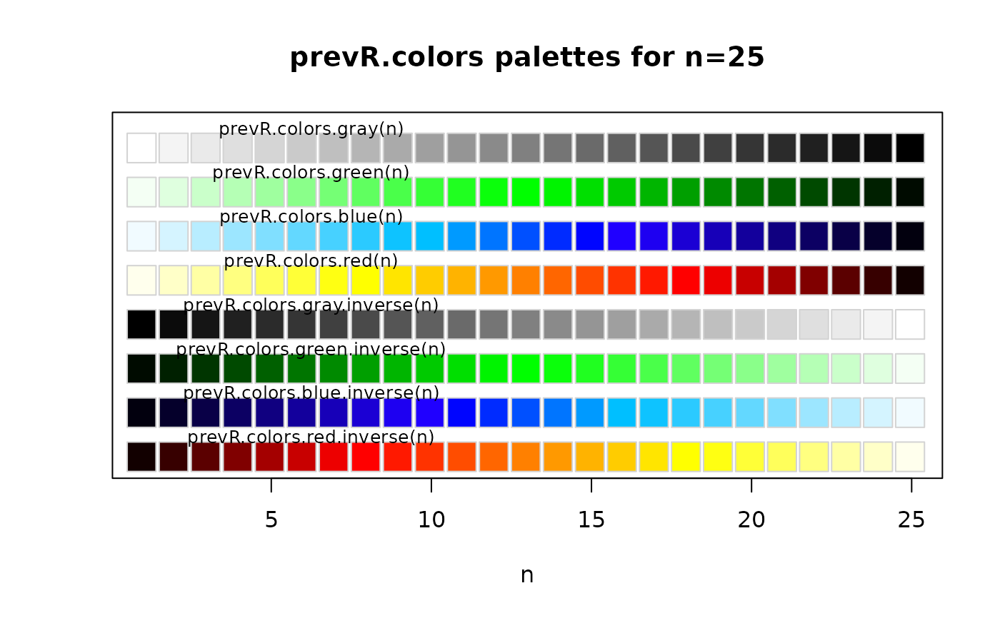

Functions generating color palettes useable with R graphical functions, in particular with
sp::spplot(). These palettes are continuous, contrast being accentuated by darkening
and lightening extrem values. prevR.demo.pal plot the available palettes.
prevR.colors.qgis.pal export a palette in a text file readable by Quantum GIS,
an open-source mapping software.
prevR.colors.blue(n) prevR.colors.blue.inverse(n) prevR.colors.gray(n) prevR.colors.gray.inverse(n) prevR.colors.green(n) prevR.colors.green.inverse(n) prevR.colors.red(n) prevR.colors.red.inverse(n) prevR.demo.pal(n, border = if (n < 32) "light gray" else NA, main = NULL) prevR.colors.qgis.pal(file, at, pal = "red", inverse = FALSE)
| n | number of different colors in the palette. |
|---|---|
| border | border color. |
| main | title. |
| file | file name with extension. |
| at | list of values of the palette. |
| pal | color palette to use ("red", "green", "blue" or "gray"). |
| inverse | use the inverse palette? |
prevR.demo.pal() plot the color palettes.
prevR.colors.qgis.pal() export a color palette in a text file readable by Quantum GIS.
The other functions return a list of colors coded in hexadecimal.
prevR.colors.red() produces a color gradation from white/yellow to red/dark red.
prevR.colors.blue() produces a color gradation from light blue to dark blue.
prevR.colors.green() produces a color gradation from light green to dark green.
prevR.colors.gray() produces a color gradation from white/light gray to dark gray/black.
Functions with a suffix .inverse produce the same color gradation, but from dark colors to light ones.
To obtain the liste of colors in RGB (Red/Green/Blue), use the function
grDevices::col2rgb().
The code of prevR.demo.pal() was adapted from the function demo.pal
presented in the examples of grDevices::rainbow().
Other color palettes are available in R. See for example
grDevices::rainbow() or the package RColorBrewer.
prevR.demo.pal(25)prevR.colors.red(5)#> [1] "#FFFF80" "#FFFF00" "#FF8000" "#FF0000" "#800000"#> [,1] [,2] [,3] [,4] [,5] #> red 255 255 255 255 128 #> green 255 255 128 0 0 #> blue 128 0 0 0 0